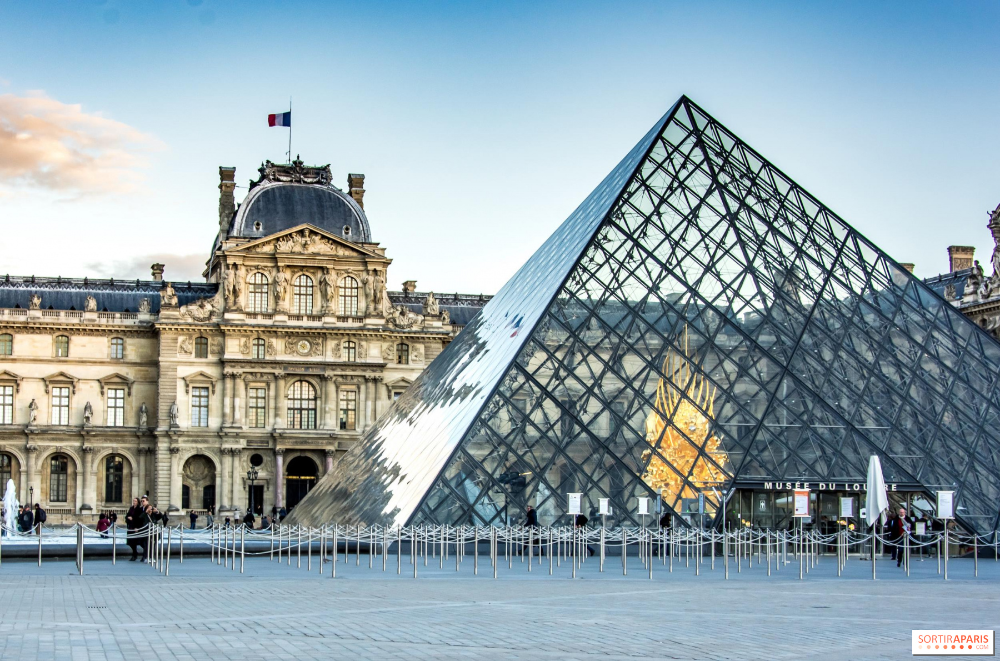

Le musée est situé dans le Palais du Louvre, jadis forteresse construite à la fin du 12ème siècle sous Philippe II. ... Le musée a ouvert le 10 Août 1793 avec une exposition de 537 peintures, la majorité des travaux étant royal et les biens confisqués à l'église.
En 2018, avec environ 10,2 millions de visiteurs annuels, le Louvre est le musée le plus visité au monde. Il est le site culturel payant le plus visité de France. Parmi ses pièces les plus célèbres figurent La Joconde, la Vénus de Milo, Le Scribe accroupi, La Victoire de Samothrace et le Code de Hammurabi.
La Cour carrée est édifiée par les architectes Lemercier puis Le Vau, sous le règne de Louis XIII et Louis XIV ; quadruplant la taille de l'ancienne cour de la Renaissance, elle a nécessité la démolition du reste de l'enceinte médiévale).
Chaque passage dans la capitale mérite une visite du Louvre, tant le plus grand musée de Paris recèle de trésors. Il rassemble des œuvres de l’art occidental du Moyen Âge à 1848, des civilisations antiques orientales, égyptiennes, grecques, étrusques, romaines, des arts graphiques et des arts de l’Islam.
La visite du musée est particulièrement agréable lors des nocturnes : moins fréquenté, le Louvre offre une atmosphère différente et des vues imprenables sur la Pyramide de Pei, la cour Carrée et la Seine.
Le Louvre possède une longue histoire de conservation artistique et historique, depuis l'Ancien Régime jusqu'à nos jours.
Le musée compte pour sa gestion 2 091 employés (fonctionnaires, contractuels et vacataires), dont 1 232 agents de surveillance, un garde pour chacune des 403 salles d’exposition, que complètent les effectifs affectés aux 900 caméras du système de télésurveillance